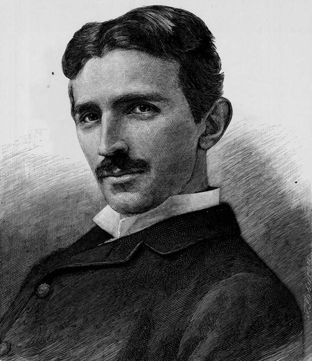
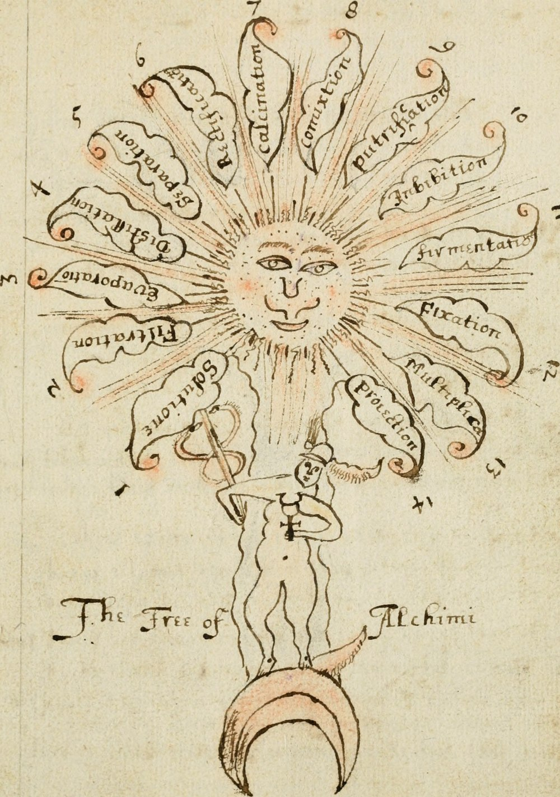
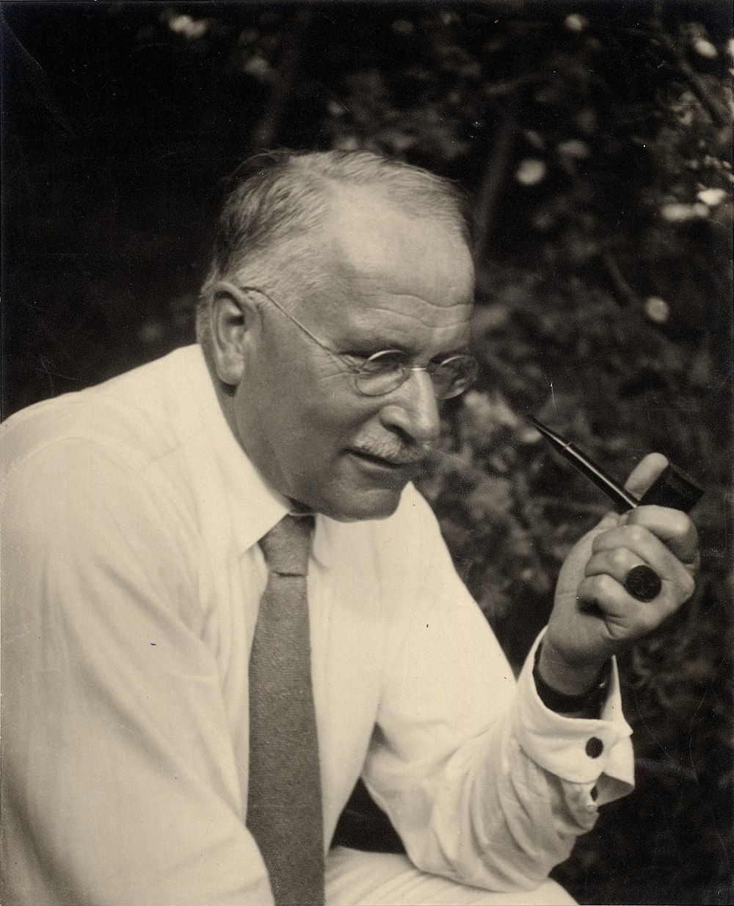

Savvy Security LLC
The Indexed Unconscious
Jung, Hall, and Tesla in an age that can finally count.
I. The Wager
There is a claim buried in the twentieth century's occult literature that has never been properly tested, mostly because testing it was impossible. The claim runs like this: the recurring symbols of human culture are not coincidences of contact and borrowing, but traces of a real structure — something that stands behind or beneath both mind and matter, and that leaves the same fingerprints wherever human beings think.
Carl Jung called that structure the collective unconscious, and later, more carefully, the unus mundus. Manly Palmer Hall called it the symbolic philosophy of the ancients, and spent a folio volume arguing that Egypt, Pythagoras, the Qabbalah, and the Rosicrucian manifestos were dialects of one language. Nikola Tesla, who had no interest in occultism as such but a great deal of interest in first principles, borrowed a Sanskrit word for it and wrote that all perceptible matter proceeds from a primary substance filling all space.
Three men, three vocabularies, one wager: that the world has a hidden index, and that the index is legible.
For a century the wager was unfalsifiable, and therefore — correctly, by the standards of the time — set aside. You cannot test a claim about universal structure when your evidence is a shelf of anecdotes and your sample size is whatever your informants happened to tell a Victorian folklorist. The claim wasn't refuted. It was unmeasurable, which in practice looks the same and is not.
What has changed is not the metaphysics. What has changed is the instrumentation. We now have databases of two thousand mythological motifs indexed against ancient DNA. We have neuroimaging frameworks that treat archetypes as eigenmodes of cortical dynamics. We have neural networks trained on separate corpora, in separate modalities, by separate companies, that converge on the same internal geometry — and a method for translating between their latent spaces without ever pairing the data.
The argument of this essay is not that Jung, Hall, and Tesla were secretly right. It is something stranger and more defensible: that they were doing low-resolution statistics on a dataset nobody could index yet, and that the index is now being built — not by mystics, but by machine learning engineers who have mostly never heard of them.
II. Three Men, One Intuition (1896–1952)
Tesla and the Akasha

The documented chain here is better than the internet's version of it, and worse.
In February 1896, Sarah Bernhardt was performing Iziel in New York — a French treatment of the Buddha legend. Swami Vivekananda was in the audience; Bernhardt spotted him and arranged an introduction afterward. Nikola Tesla was at that meeting. Vivekananda wrote to a correspondent on 13 February 1896 that Tesla was delighted to hear about the Vedantic concepts of prāna, ākāśa, and the kalpas, and considered them the only cosmological framework modern science could take seriously. Tesla, Vivekananda reported, believed he could demonstrate mathematically that force and matter reduce to potential energy. Vivekananda planned to return the following week for the demonstration. The letter survives in his Complete Works (Vol. 5, Epistles, First Series, LVII).
The demonstration never came. Tesla could not derive mass–energy equivalence; Einstein published it nine years later.
But the vocabulary stuck. In an article drafted 13 May 1907 — dated by Tesla scholar Leland Anderson, unpublished in Tesla's lifetime, and later excerpted in John J. O'Neill's 1944 biography Prodigal Genius — Tesla wrote a paragraph that has since been reproduced in ten thousand places, usually without attribution. Its substance: humanity long ago recognized that all perceptible matter comes from a primary substance of inconceivable tenuity filling all space — the Akasha, or luminiferous ether — acted upon by a life-giving creative force, Prana, which throws that substance into whirls of enormous velocity, producing gross matter; when the force subsides, matter reverts to the primary substance. He then asks whether man can control this process, and whether he might one day do so by the force of will alone. The essay is titled “Man's Greatest Achievement.”
Now the honest part. Two things circulate about Tesla that this essay will not lean on:
- The “private journal” on the Akashic records does not exist as commonly described. Tesla's actual diary is the Colorado Springs Notes, 1899–1900 — a technical laboratory record, published by Nolit in 1978. It is a magnificent document. It is about oscillators, capacitance, and standing waves, not cosmic archives.
- The famous quotation — “My brain is only a receiver; in the Universe there is a core from which we obtain knowledge, strength and inspiration” — has no located primary source. It appears in quotation aggregators, in Iain McGilchrist (who hedges with “is said to have said”), and, as of 2025, in a Dan Brown novel. No Tesla article, letter, interview, or patent has been produced for it. It may be genuine and undocumented; it may be an artifact of the internet's Tesla-industrial complex. Either way it cannot bear weight.
What Tesla did write, verifiably, in The Century Magazine of June 1900 — “The Problem of Increasing Human Energy” — is arguably more useful to this essay than the apocryphal line. Describing years of introspective self-observation, Tesla concluded that he had demonstrated to his own satisfaction that he was an automaton endowed with power of movement, responding to external stimuli arriving at his sense organs, thinking and acting accordingly. He then proposed building a machine that would represent him mechanically — responding as he responded, more primitively — and named the new art telautomatics.
Read that again with 2026 eyes. In 1900, Tesla described himself as a stimulus–response system, then proposed constructing an external copy of that system. That is not mysticism. That is the founding gesture of machine intelligence, stated forty-five years before the Turing test, by a man who had also decided that matter was a modulation of an informational substrate.
Hall and the Compiler's Wager

Manly Palmer Hall published An Encyclopedic Outline of Masonic, Hermetic, Qabbalistic and Rosicrucian Symbolical Philosophy in 1928, in San Francisco, through the H. S. Crocker Company, in a subscribers' folio of about 550 copies, illustrated by J. Augustus Knapp. He was twenty-seven. It is universally known by its subtitle: The Secret Teachings of All Ages. He founded the Philosophical Research Society in Los Angeles in 1934 and wrote for another fifty-six years.
Hall's method was prisca theologia — the Renaissance thesis that a single ancient wisdom underlies the world's religious and philosophical systems, fragmented by time and transmission. He argued that Pythagorean ratio, Egyptian initiation, alchemical process, and Tarot iconography were not analogous by accident but cognate by descent.
As history, this is unreliable, and it should be said plainly: Hall was a compiler and a synthesist working from secondary sources, in a genre that predated modern textual criticism and mostly ignored it where it existed. His datings are frequently wrong. His sources are frequently Theosophical rather than documentary. Academic historians of esotericism cite him as a phenomenon rather than an authority.
But strip out the bad philology and a structural claim remains, and it is a claim about data: that if you assembled the world's symbolic material in one place and looked at it as a single corpus, you would find non-random shared structure. Hall could not test that. He asserted it, gorgeously, at folio scale. The assertion is now testable — see Section IV — and it has partially survived.
Jung, Pauli, and the Unus Mundus

Jung's contribution was to give the intuition a mechanism, and then to give the mechanism to a physicist.
The trajectory: from the collective unconscious (a stratum of the psyche below the personal unconscious, populated by inherited predispositions to form certain images), through the psychoid archetype of “On the Nature of the Psyche” (1947) — archetypes as neither purely psychic nor purely physical, irrepresentable in themselves, manifesting on one end as image and affect and on the other as physical regularity — to synchronicity, published in 1952 alongside Wolfgang Pauli in The Interpretation of Nature and the Psyche and later collected in Collected Works Vol. 8.
The Jung–Pauli correspondence (published in English as Atom and Archetype) is the crucial document. Pauli — Nobel laureate, author of the exclusion principle, and Jung's former analysand — was not slumming. He took seriously the possibility that the psychophysical problem was the problem of the age, and that the ordering patterns physicists call laws of nature and the patterns psychologists call archetypes might have a common source in a reality prior to the mind/matter split. Jung's alchemical term for that prior reality was unus mundus, the one world. Synchronicity was proposed as its observable signature: acausal, meaningful co-occurrence of psychic and physical events.
Jung's astrological experiment — his attempt to test synchronicity statistically on marriage-horoscope data — is a fascinating failure, and it matters here. It failed because he had the right instinct (this should be measurable) and none of the tools. He was trying to run a large-scale correlational study with a hand-tabulated sample and no framework for multiple comparisons. He is not to be mocked for this. He is to be understood as a man born eighty years early.
III. The Waste-Basket
Why did these three end up in the same intellectual ghetto?
Wouter Hanegraaff's Esotericism and the Academy: Rejected Knowledge in Western Culture (Cambridge, 2012) supplies the best available answer, and it is not the one either the skeptics or the believers expect. Hanegraaff's argument is that “Western esotericism” is not a coherent tradition at all but a waste-basket category — a container assembled after the fact, into which Protestant polemic and Enlightenment historiography jointly deposited whatever they needed to define themselves against. Magic, divination, symbolism, the occult, Hermeticism, Neoplatonic cosmology: these were not each independently refuted. They were collectively excluded, as a boundary-maintenance operation, and the exclusion was then retold as if it had been a refutation.
Hanegraaff calls this a case of mnemohistory — not what happened, but what a culture needs to believe happened in order to know who it is. He is a mainstream academic making a conservative methodological point, not a defender of magic. That is precisely what makes the point load-bearing.
The consequence for our three men is specific. Jung, Hall, and Tesla each made a claim of the form there is a deep shared structure underlying diverse surface phenomena. That claim is, in its logical form, entirely ordinary science — it is the same form as comparative linguistics, evolutionary phylogeny, and representation learning. What disqualified it was not the form. It was the vocabulary, the company it kept, and the absence of a corpus large enough to check it against.
Change the vocabulary, change the company, supply the corpus, and watch what happens.
IV. What the Machines Found
Here the essay stops being intellectual history and starts being a survey of results. Four independent research programs, none of which set out to vindicate anybody, have produced findings that bear directly on the wager.
1. Myth has a phylogeny, and it is deep
Graça da Silva and Tehrani (Royal Society Open Science, 2016) took 275 magic-tale types from the Aarne–Thompson–Uther international index across 50 Indo-European-speaking populations, and applied comparative phylogenetic methods and autologistic modeling. Result: tale distributions correlate strongly with phylogenetic relationships between populations — descent — and not with spatial proximity, which is what you'd expect if the tales were simply borrowed across borders. Several tales predate the literary record entirely. “The Smith and the Devil” traces plausibly to the Bronze Age.
Julien d'Huy has run the same machinery on individual mythemes: the Cosmic Hunt (the myth in which a hunted animal becomes the Big Dipper), Polyphemus, Pygmalion. His Cosmic Hunt analysis — 47 versions, 93 characters, consistency index 0.59, retention index 0.71 — supports low horizontal borrowing, Palaeolithic diffusion, and punctuated evolution, and permits reconstruction of an ancestral version.
And then the capstone. Delbrassine, Mezzavilla, Vallini, Berezkin, Bortolini, Tehrani, and Pagani (bioRxiv, January 2025) took Yuri Berezkin's Analytical Catalogue of World Mythology and Folklore — 2,138 motifs across 781 traditions — and ran ADMIXTURE on it. ADMIXTURE is a population-genetics tool. They applied it to myths, then correlated mythological distance against genetic distance (using modern and ancient DNA) and geographic distance separately, to separate demic diffusion from cultural diffusion. Their finding: after controlling for geography, the residual genetic signal in pre-Last-Glacial-Maximum Eurasia is what best explains the present-day worldwide distribution of mythological motifs.
Translate that out of the jargon: some of humanity's stories have been travelling with human populations since before the last ice age, and you can see the migration in the motifs.
Hall asserted a universal symbolic substrate on aesthetic and philosophical grounds. What the data actually show is not a Platonic archive but something more interesting and more constrained: deep vertical inheritance. Not a cosmic library. A very old family tree. Hall was wrong about the mechanism and directionally right about the pattern — which is a considerably better score than his reputation predicts.
2. Archetypes have a proposed neural implementation
McGovern, Aqil, Atasoy, and Carhart-Harris, “Eigenmodes of the deep unconscious: the neuropsychology of Jungian archetypes and psychedelic experience,” Neuroscience of Consciousness 2025(1): niaf039.
This is a serious paper in a serious journal, and its authors include the leading figure in psychedelic neuroscience and a leading figure in connectome-harmonic analysis. Its move is to reinterpret archetypes through the Free Energy Principle and predictive processing, decomposing Jung's concept into three tractable pieces: the archetype-as-such (a disposition to form particular predictions, rooted in subcortical affective systems), archetypal images (sensory representations that surface when precision-weighting of priors relaxes — as in psychedelic states), and archetypal stories (narrative forms encoded in higher cortical areas). The unifying formalism is the eigenmode: stable, recurring spatiotemporal patterns arising from the interplay of cortical hierarchy and subcortical affect.
This does not vindicate Jung's metaphysics. It does something Jung would have preferred: it makes a piece of the theory operational. An eigenmode is a measurable object.
3. Independent minds converge on the same geometry
Huh, Cheung, Wang, and Isola, “The Platonic Representation Hypothesis” (ICML 2024; arXiv:2405.07987).
The finding: representations inside deep neural networks are converging. Across time, across architectures, across domains — and, critically, across modalities. As vision models and language models scale, they begin measuring distance between datapoints in increasingly similar ways. The authors' interpretation: models trained on different projections of the same underlying reality are converging toward a shared statistical model of that reality. They named it after Plato's forms, and were not being cute — the structure of the argument is genuinely Platonic. Images are one shadow on the cave wall; text is another; the models are triangulating the object casting both.
Then Jha, Zhang, Shmatikov, and Morris, “Harnessing the Universal Geometry of Embeddings” (arXiv:2505.12540; NeurIPS 2025), pushed it from conjecture to construction. Their vec2vec method translates text embeddings between entirely different vector spaces — different architectures, different parameter counts, different training data — with no paired data, no shared encoder, and no predefined matches. It works by learning the universal latent structure directly. They call this the Strong Platonic Representation Hypothesis: the universal representation doesn't merely exist, it can be learned and used.
It works well enough to be a security vulnerability. Given only a database of embedding vectors from an unknown model, an adversary can translate them into a known space and recover sensitive attributes of the original documents.
Sit with the shape of that result. Two systems that have never communicated, trained on different data, arrive at internal structures so alike that a third system can learn the mapping between them from unpaired samples alone. If you handed that finding to Jung and Pauli in 1952 without the technical apparatus, they would have recognized it instantly. It is unus mundus stated as an engineering result: distinct minds, independently exposed to the world, converge on a common representational order that is prior to any of them.
4. The models reproduce the archetypes — unevenly
A 2025 study in Information (16(4):319) evaluated LLM-generated narratives against Jungian archetypal structure, with expert raters. The models handled structured, goal-directed archetypes well — Hero, Wise Old Man — and handled ambiguous, psychologically loaded ones badly: Shadow, Trickster. High marks for narrative coherence and thematic alignment; low marks for emotional depth and originality.
That asymmetry is the most Jungian result in this entire essay. Trained on the collective textual output of humanity, the machine reproduces the persona effortlessly and stumbles on the shadow. Whether that reflects a limitation of the architecture, a bias in the training corpus, or the RLHF process sanding off exactly the material Jung said we most need to integrate — that is an open empirical question, and a very good one.
V. The Speculation
Everything above is cited. What follows is not; it is the extrapolation the evidence invites, offered as speculation and labeled as such.
The thesis: the sacred sciences and the material sciences were never studying different objects. They were studying the same object at different resolutions, with different error bars, and — decisively — with different attitudes toward being wrong.
Consider what the esoteric traditions actually were, functionally. They were multi-generational programs for compressing observations about human experience into transmissible symbolic form, under conditions of severe data scarcity and no statistical method. A Hermetic correspondence table is a lookup structure. An astrological system is a high-dimensional classifier with terrible validation. A Tarot deck is, as Hall himself argued, a mnemonic architecture built for a civilization that expected to lose literacy. The Aarne–Thompson–Uther index — the backbone of the 2016 phylogenetics paper — is itself a nineteenth-century occultist's dream made bureaucratic: every story in Europe, numbered.
These systems failed as science for one reason above all others: no mechanism for discarding. They accumulated and harmonized; they never pruned. Every correspondence was true, every tradition was a fragment of the one truth, and nothing could ever be shown false. Hanegraaff's waste-basket got filled with a great deal of noise alongside the signal, and the traditions themselves had no way to tell which was which.
What machine learning supplies is precisely the missing organ: discarding at scale. Gradient descent is an industrialized method for throwing away what doesn't predict. A loss function is a pruning rule that never gets tired and never has a favorite.
So here is the futurist claim, stated so it could be wrong:
As the archive of parsed human output approaches completeness, the intuitions that produced the esoteric traditions will resolve into two piles, and the piles will not be the ones either camp expects. Some substantial fraction of the “sacred sciences” will turn out to have been crude but real signal detection — pattern-recognition performed by people with excellent instincts, no instruments, and a bad epistemic immune system. Another fraction, likely larger, will resolve into demonstrated noise, and will do so specifically, item by item, rather than by blanket dismissal. That specificity is the new thing. For three centuries the choice was between wholesale credulity and wholesale rejection, because retail was impossible. Retail is now possible.
Four falsifiable predictions, offered so this essay can be scored later:
- Archetype inventories will be derived, not enumerated. Someone will run unsupervised structure discovery over a global narrative corpus and publish a set of latent narrative attractors. The interesting outcome is not whether they match Jung's list. It is how many there are and whether the count is stable across corpora, languages, and model families. Jung guessed there was no complete list. The data will settle it.
- The Platonic representation will be shown to be culture-shaped, not reality-shaped — partially. The convergence Huh et al. document is currently attributed to a shared underlying reality. A decisive test is models trained on genuinely disjoint cultural corpora. If convergence holds, the claim strengthens enormously. If it fractures along cultural seams, we have learned that we were measuring the shape of the training distribution, and the Platonic reading collapses into a sophisticated selection effect. I expect a partial result, and the location of the seam will be the most important finding in the cognitive science of the 2030s.
- Synchronicity will get its proper test and mostly fail — with a residue. Jung's astrological experiment was underpowered and methodologically naive. Continuous multimodal life-logging plus modern causal inference makes the meaningful-coincidence question genuinely tractable for the first time. My expectation: the large majority of reported synchronicity resolves into apophenia, base-rate neglect, and post-hoc narrative construction, all of which are well-characterized. The residue worth studying is not paranormal. It is the discovery that the human meaning-detection system is calibrated for something — and characterizing what it is actually tracking is a real research program.
- The counter-current: convergence will make the archive worse, not better. Every result above cuts the other way too. If all models converge on one representation, and all human writing is increasingly mediated by those models, the diversity that made the archive worth studying begins to collapse. There is already a literature on the homogenizing effect of LLMs on human expression. Teilhard's noosphere and Vernadsky's before it imagined the planetary mind as integration. The realistic near-term outcome is integration that arrives as flattening — a global mind with a single accent. The archive that would let us test Jung's hypothesis is being contaminated by the instrument built to test it. The observation problem Pauli spent his life on has migrated into the humanities, and almost nobody has noticed.
VI. Where This Breaks
An essay of this kind is worthless without the demolition section, so here it is, aimed at my own argument.
Jung's archetype theory has a genuine biological problem. As originally framed, the inheritance of specific primordial images is Lamarckian, and Lamarckism is false. Jung spent years retreating to a defensible position — inherited predisposition to form images rather than inherited images — and the retreat is real but never quite completed. Pietikäinen (Journal of Analytical Psychology, 1998) proposed rescuing archetypes as Cassirerian symbolic forms, culturally rather than biologically constituted, which is a serious repair but abandons what Jung most wanted. Noll's The Jung Cult (1994) is polemical and partisan and also lands several blows that Jungians have not fully answered. The psychoid archetype, situated deliberately beyond both psychic and physical access, is very difficult to distinguish from an unfalsifiable posit. Parsimony objection: cultural transmission plus shared cognitive architecture plus shared ecology may explain every universal Jung invokes, with no psychic substrate required. The 2025 folktale-phylogenetics data arguably supports the parsimonious reading, since vertical cultural inheritance is exactly the boring mechanism that makes an archetypal substrate unnecessary.
Tesla's Akasha is dead physics. The luminiferous ether was falsified. Tesla rejected relativity to the end of his life and was simply wrong to do so. The Vedantic framing is historically fascinating and physically inert; nothing in modern field theory requires or supports it, and analogies drawn to zero-point energy are, at present, analogies rather than arguments.
Hall was not a historian. The Secret Teachings of All Ages is a work of synthetic imagination, not scholarship, and treating its datings or attributions as evidence is a category error.
The “Akashic records” are not ancient. This deserves emphasis, because it is the single most common error in this territory. Ākāśa is a genuine Sanskrit term for space or aether. But the concept of a cosmic archive of all events is a nineteenth-century Theosophical construction. Blavatsky wrote of the astral light as a universal recorder and used ākāśa as a life-principle, but did not use the phrase “akashic records.” Sinnett's Esoteric Buddhism (1883) introduced the notion of permanent records in the Akasa; by Leadbeater's Clairvoyance (1899) the term and the concept had fused. Steiner and Alice Bailey elaborated it further — Bailey's simile is an immense photographic film. So when Tesla used Akasha in 1907, he was using Vivekananda's Vedantic sense, not the Theosophical archive sense. Anyone claiming Tesla wrote about the Akashic records is conflating two different concepts separated by a specific and traceable act of Victorian syncretism.
And the convergence results may not mean what I have implied. Neural networks converging on similar representations is consistent with a shared statistical model of reality. It is equally consistent with shared training data, shared architectural inductive biases, shared benchmark pressure, and the increasing homogeneity of the AI industry itself. Huh et al. discuss counterexamples honestly. A recent line of work notes that models can converge on representations while diverging on reasoning — convergence without understanding. The Platonic reading is the interesting interpretation; it is not yet the established one, and I have leaned on it harder than the evidence strictly licenses. That is what speculation is for, as long as it is labeled.
VII. Coda: The Reading Room
Imagine a facility, sometime in the next fifty years, that does nothing but index.
Not a search engine — indexes already exist. Something more like a comparative instrument: every recorded narrative, ritual, dream report, liturgy, folk tale, legal code, and lullaby that survived; cross-referenced against genomes, migrations, climate records, and the neural correlates of the states in which the material was produced. Not an archive of facts. An archive of the shapes human minds make, with the substrate they were made on attached.
Hall would recognize what it was for immediately, and would find the building disappointingly plain. Jung would go straight to the residuals — to whatever failed to reduce. Tesla would ask what it consumed and whether the power could be transmitted without wires.
And what it would tell them, I suspect, is neither the vindication the esotericists want nor the dismissal the skeptics expect. It would say: you were looking at something. It was not a cosmic library and there was no Hall of Records. What you were looking at was the shape of a species — a single population, bottlenecked, dispersed, carrying its stories out of Africa and across an ice age, converging again and again on the same handful of narrative attractors because it kept encountering the same handful of problems with the same handful of neural equipment.
That is smaller than the unus mundus. It is also, unlike the unus mundus, true, and measurable, and still mostly unmapped.
Jung's deepest instinct was not that the psyche contains a god. It was that the psyche has a structure that does not belong to any individual, and that this structure can be studied. He was right about that. He simply lacked the corpus, the compute, and the statistics.
We have all three now. The wager is finally on the table, and for the first time in three hundred years it is possible to lose it honestly — which is the only way anything has ever been worth winning.
Sources
Primary — Tesla
- Tesla, N. (1900). “The Problem of Increasing Human Energy, With Special Reference to the Harnessing of the Sun's Energy.” The Century Illustrated Monthly Magazine, Vol. LX, June 1900, pp. 175–211. tfcbooks.com/tesla/1900-06-00.htm
- Tesla, N. (1907, unpublished; dated 13 May 1907 by Leland Anderson). “Man's Greatest Achievement.” Excerpted in O'Neill, J. J. (1944), Prodigal Genius: The Life of Nikola Tesla. Ives Washburn.
- Tesla, N. (1978). Colorado Springs Notes, 1899–1900. Nolit, Belgrade — Tesla's actual laboratory diary.
- Vivekananda, S. (13 Feb. 1896). Letter LVII, The Complete Works of Swami Vivekananda, Vol. 5, Epistles — First Series. Wikisource.
Primary — Jung and Hall
- Jung, C. G. (1947/1954). “On the Nature of the Psyche.” Collected Works Vol. 8.
- Jung, C. G. (1952). Synchronicity: An Acausal Connecting Principle. In The Interpretation of Nature and the Psyche (with W. Pauli); CW Vol. 8. Princeton UP.
- Meier, C. A. (ed.) (2001). Atom and Archetype: The Pauli/Jung Letters, 1932–1958. Princeton UP.
- Hall, M. P. (1928). An Encyclopedic Outline of Masonic, Hermetic, Qabbalistic and Rosicrucian Symbolical Philosophy (“The Secret Teachings of All Ages”). H. S. Crocker Co., San Francisco. Subscribers' folio, ~550 copies, ill. J. A. Knapp.
Historiography of esotericism
- Hanegraaff, W. J. (2012). Esotericism and the Academy: Rejected Knowledge in Western Culture. Cambridge UP — “waste-basket category,” p. 254; mnemohistory, p. 375.
- Sinnett, A. P. (1883). Esoteric Buddhism; Leadbeater, C. W. (1899). Clairvoyance; Bailey, A. A. (1927). The Light of the Soul — for the Theosophical construction of the “akashic record.”
- Davis, E. (1998/2015). TechGnosis: Myth, Magic, and Mysticism in the Age of Information. North Atlantic Books.
Computational mythology and cultural phylogenetics
- Graça da Silva, S., & Tehrani, J. J. (2016). “Comparative phylogenetic analyses uncover the ancient roots of Indo-European folktales.” Royal Society Open Science 3(1): 150645. doi.org/10.1098/rsos.150645
- d'Huy, J. (2013). “A Cosmic Hunt in the Berber sky: a phylogenetic reconstruction of Palaeolithic mythology.” Les Cahiers de l'AARS 16: 93–106.
- Thuillard, M., Le Quellec, J.-L., d'Huy, J., & Berezkin, Y. E. (2018). “A Large-Scale Study of World Myths.” Trames 22(4): 407–424.
- Delbrassine, H., Mezzavilla, M., Vallini, L., Berezkin, Y., Bortolini, E., Tehrani, J., & Pagani, L. (2025). “Worldwide patterns in mythology echo the human expansion out of Africa.” bioRxiv 2025.01.24.634692. doi.org/10.1101/2025.01.24.634692
- Uther, H.-J. (2004). The Types of International Folktales (ATU index). FF Communications.
Neuroscience of archetypes
- McGovern, H., Aqil, M., Atasoy, S., & Carhart-Harris, R. (2025). “Eigenmodes of the deep unconscious: the neuropsychology of Jungian archetypes and psychedelic experience.” Neuroscience of Consciousness 2025(1): niaf039. doi.org/10.1093/nc/niaf039
Representation convergence in AI
- Huh, M., Cheung, B., Wang, T., & Isola, P. (2024). “Position: The Platonic Representation Hypothesis.” Proceedings of the 41st ICML. arxiv.org/abs/2405.07987
- Jha, R., Zhang, C., Shmatikov, V., & Morris, J. X. (2025). “Harnessing the Universal Geometry of Embeddings.” NeurIPS 2025. arxiv.org/abs/2505.12540
- (2025). “AI Narrative Modeling: How Machines' Intelligence Reproduces Archetypal Storytelling.” Information 16(4): 319. doi.org/10.3390/info16040319
Critical apparatus
- Pietikäinen, P. (1998). “Archetypes as symbolic forms.” Journal of Analytical Psychology 43: 325–343. doi.org/10.1111/1465-5922.00032
- Noll, R. (1994). The Jung Cult: Origins of a Charismatic Movement. Princeton UP.
- Levit, G. S. (2000). “The Biosphere and the Noosphere Theories of V. I. Vernadsky and P. Teilhard de Chardin.” Archives Internationales d'Histoire des Sciences 50(144): 160–176.
- Vidal, C. (2021). “Pierre Teilhard de Chardin's Phenomenology of the Noosphere.” History and Philosophy of the Life Sciences. doi.org/10.1007/s40656-021-00475-7
Flagged as unverified
- “My brain is only a receiver…” — attributed to Tesla; no primary source located. Appears only in quotation aggregators and secondary works that hedge attribution. Do not cite as Tesla.
- “Tesla's private journal on the Akashic records” — no such document. The Colorado Springs Notes are technical.
A note on the images. The cover diagram is Robert Fludd's map of the human mind from Utriusque Cosmi… Historia (1619) — sensory world, imaginative world, and intellectual world nested onto a human head — the same three-tier structure Section II describes Jung, Hall, and Tesla each groping toward independently. The alchemical “Tree of Alchimi” diagram in Section II is drawn from the actual Manly Palmer Hall Collection of Alchemical Manuscripts (Getty Research Institute, no known copyright restrictions) — primary-source material from Hall's own library, not a modern illustration. Portraits of Tesla and Jung are public domain. None of these images were AI-generated.